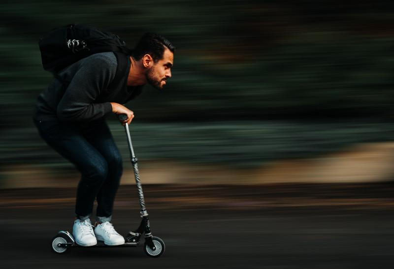

Фізична активність щодня: нащо, як та де знайти час?
Недостатня рухливість та сидячо-лежачий спосіб життя загрожує нам не лише возвеличенням у фізичному плані, а й істотним підвищенням ризиків виникнення діабету другого типу, проблем зі сном, болю у шиї та спині, проблем із кровообігом. Надмірне сидіння провокує виникнення онкозахворювань кишківника, ендометрію та молочної залози.
Натомість виконання фізичних вправ покращує кровообіг, допомагає нам долати стрес, тримає в бойовій готовності наш імунітет, покращує колір шкіри та нашу самооцінку.
Темп життя, хоч і сидячи, але зашкалює, сотня справ, що вимагають уважності, стрес, від якого не можна просто взяти і з вереском втекти, як було, наприклад, пару тисяч років тому... Де взяти час, коли його нема і на "поспати"?
Приводимо рекомендації із сайту Національної служби охорони здоров'я Англії. А вони пишуть, що для того, щоб залишатися здоровими, дорослим людям (і наводять віковий проміжок 19-64 р) необхідно:
Хоча б 150 хв помірної аеробної активності на тиждень (наприклад, їзда на велосипеді чи швидка хода),і хоча б 2 рази на тиждень виконання силових вправ на всі головні групи м'язів;
Або
Хоча б 75 хв інтенсивної аеробної активності на тиждень (наприклад, біг чи великий теніс) і хоча б 2 рази на тиждень виконання силових вправ на всі головні групи м'язів;
Також наводиться приклад можливого комбінування: 2 x 30-хвилинні пробіжки плюс 30 хвилин швидкої хотьби прирівнюється приблизно до 150 хвилин помірних аеробних вправ. Ну і, звичайно, сюди ж плюс ті самі силові вправи двічі на тиждень.
Окрім цього, рекомендується чергувати періоди тривалого сидіння з легкою фізичною активністю.
У висновках одного з метааналізів на цю тему пропонують щоденну 60-75-хвилинну помірну фізичну активність, як таку собі міні-індульгенцію за сидячий спосіб життя – знижуються ризики передчасної смерті через порушення, пов'язані із тривалим сидінням.
Ну і традиційно наведемо маленькі лайфхаки, які можуть допомогти більше рухатися, та знайти врешті той безцінний час на ті помірні навантаження і силові вправи.
- Обирайте пересування пішки, замість використання транспортних засобів, щоразу, коли є така нагода. Віднині ми пам'ятаємо, що це не витрата часу, а інвестиція у власне здоров'я;
- Розмовляючи по телефону – ходіть чи виконуйте прості вправи;
- Вставайте з робочого місця та спілкуйтеся з колегами особисто замість електронного листування -щоразу, коли це можливо;
- Плануєте зустріч? Нехай це буде прогулянка, замість сидіння в кафе;
- Вагаючись, якому хобі приділити час, обирайте те, що змусить вас більше рухатися і дихати частіше;
- Візьміть на озброєння сучасні дари прогресу – існує широченне різноманіття мобільних додатків, які нагадують, що Вам треба зробити перерву і порухатися, розкажуть, яка вправа і як швидко що натренує, і навіть познайомить із новими друзями;
- Перед телевізором зручно виконувати прості вправи із пілатеса, йоги та вправи на розтяжку, а чистячи зуби можна гарно підкачати литкові м'язи;
- Гуляєте із дитиною? Долучіться до рухливої гри чи просто поприсідайте, або ж повідтискайтеся від найближчої лавки;
- У черзі в супермаркеті можна покачати біцепси корзиною з покупками;
- Паркуйтеся по периметру парковки. Це не лише ознака гарного тону, а й можливість пройти зайву сотню кроків;
- Стоїте біля плити? Помахайте ногою. Потім другою. Сушите волосся феном – зробіть те ж саме;
- Повертаєтеся з роботи мимо спортивного майданчика? Затримайтеся на 5 хвилин та зробіть кілька простих вправ, які у вас гарно виходять. Або виходитимуть за кілька разів. Щоразу помічатимете, що настрій істотно покращується;
- Очікуєте на дзвінок чи поки закипить чайник? Присідайте, відтискайтеся чи качайте прес.
І пам'ятайте, що до великих перемог ведуть маленькі кроки, а до здоров'я – не лише бігові доріжки у спортзалах, а й наш, як то зараз кажуть, лайфстайл. А тепер 10 разів присядьте! :)

Photo by Nicolas I. on Unsplash